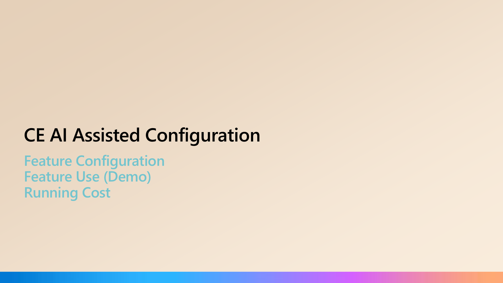
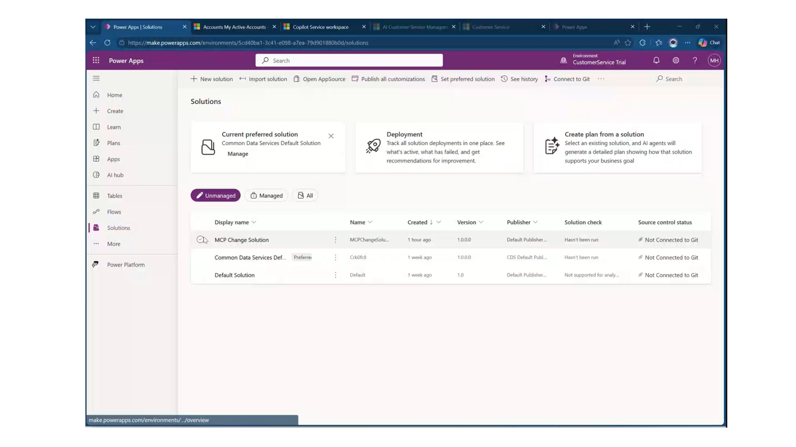
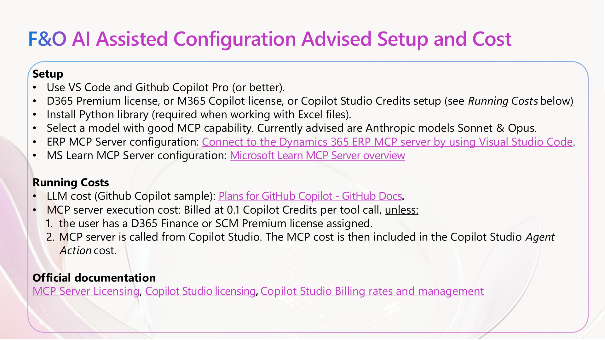
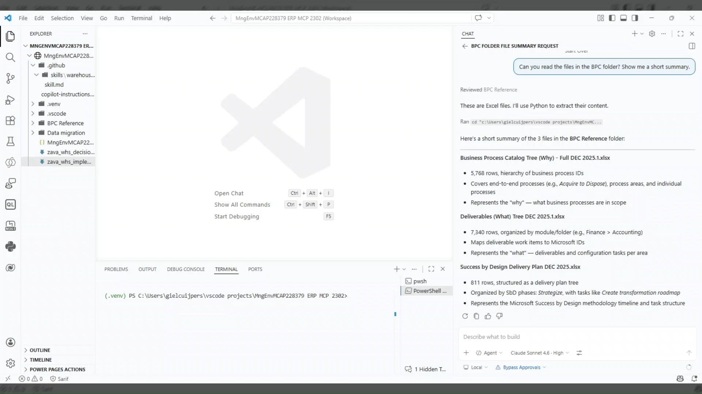

Business Strategy
The alignment of AI investments with strategic business outcomes and measurable impact.
On a typical D365 implementation, 25% of expert time disappears into tasks that AI + MCP can handle.
On a 10-person D365 team, 25% boring work = 2.5 FTEs spending their day on tasks AI can do. With Azure DevOps MCP, D365 MCP & GitHub Copilot, that time flows back to what your consultants love.
Traditional LoB implementations are lengthy, costly, and can be risky.
The five drivers of AI value, anchored on one shared goal: Frontier Transformation.
The alignment of AI investments with strategic business outcomes and measurable impact.
The data and infrastructure needed to run AI solutions at scale, securely and reliably.
The organization’s AI expertise and repeatable processes to create sustainable value.
The vision, operating model, skills, resources, and culture to drive AI adoption.
The controls and processes to ensure secure, compliant and responsible AI.
AI-First Consulting as the strategic approach to integrate AI across every process and engagement, from presales to delivery, enabling faster, outcome-based delivery and greater efficiency.
Three layers of every business application are being rewritten at the same time.
Taking an AI-first approach to Application Consultancy revolves around a data-driven approach using Clients, Tools and Knowledge.
Scenarios are potential use cases, not productized capabilities.
Work IQ stitches productivity data and external systems into a single work-context layer that powers every Copilot surface.
Yes, but with a caveat. Copilot Studio requires an HTTP/SSE-based remote MCP server, not a local stdio one. Microsoft recently released the Azure DevOps Remote MCP Server in public preview. This is exactly what you connect to Copilot Studio.
The local npx @azure-devops/mcp version used in VS Code cannot be directly connected to Copilot Studio. Use the remote HTTP/SSE endpoint for all agent platforms outside the IDE.
learn.microsoft.com/azure/devops/mcp-server/remote-mcp-serverwork-items, pipelines…) to keep the agent focused and avoid tool overloadmcp_ado_wit_add_child_work_items
Creates multiple child items in one call under a parent work item; e.g. create 10 User Stories under Feature #123, each with title, description, story points & iteration path.
mcp_ado_wit_update_work_items_batch
Updates multiple existing items in batch. Reassign owners, change priority, move to sprint, update state. All in a single operation.
mcp_ado_wit_create_work_item
Creates any work item type (Epic, Feature, Story, Task, Bug) with full field support including Markdown description via the format parameter.
The Azure DevOps MCP Server enables a two-step process: data retrieval and AI analysis.
Azure DevOps MCP Server gives your AI assistant secure, real-time access to client project data in Azure DevOps.
Your AI assistant processes the retrieved project data to deliver client-ready insights your project team previously spent hours compiling.
A layered architecture where CRM solutions, headless business services and a CRM agent foundation come together behind one Copilot-driven experience.
Six tool categories that let an agent operate Dynamics 365 customer engagement & Dataverse directly. From schema design to plugins, navigation and process flows.
| Scope | Approx. tools | Complexity | Notes |
|---|---|---|---|
| Schema tools | ~6 tools | Low | Simple Dataverse metadata API calls |
| Data tools | ~5 tools | Low | SQL passthrough + Web API proxy calls |
| Form & UI tools | ~8 tools | Low | Read/write system form, web resource tables |
| App & Navi tools | ~6 tools | Medium | Sitemap XML manipulation + publishing |
| Plugin tools | ~6 tools | Medium | Assembly upload via base64, step registration |
| Process & API tools | ~5 tools | Medium | BPF workflow activation flow + Custom API reg. |
| Security tools | ~4 tools | Low | Role assignment via standard SDK calls |
| Total | ~40 tools | across 7 categories · 2–4 days with .NET + Dataverse SDK | |
A layered architecture where ERP solutions, headless business services and a ERP agent foundation come together behind one Copilot-driven experience.
An agent can do almost anything a person can do in ERP.
Every function a Dynamics 365 user can perform is now exposed to an agent through Microsoft’s ERP MCP server. This is the unlock that turns Agentic ERP from a roadmap slide into something that ships.

CE AI-assisted configuration demo. The PPTX shows a screenshot. Replace with a hosted video link before public sync.

CE AI-assisted configuration demo (~174 MB embedded video). Replace with a hosted video link before public sync.

F&O AI-assisted configuration demo. The PPTX shows a screenshot. Replace with a hosted video link before public sync.
A simplified warehouse layout used in the F&O AI-assisted configuration demo. Goods flow from inbound on the left, through storage and picking in the centre, to outbound on the right.

Finance and Operations demo (~153 MB embedded video). Replace with a hosted video link before public sync.